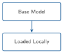
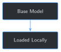

import torch
from transformers import AutoModelForCausalLM, AutoTokenizer
MODEL_NAME = "Qwen/Qwen2.5-1.5B-Instruct"
tokenizer = AutoTokenizer.from_pretrained(MODEL_NAME)
model = AutoModelForCausalLM.from_pretrained(MODEL_NAME, torch_dtype=torch.float32)1 Loading and Running Your First Local LLM


Progress █░░░░░░░░░░░░ 1 / 13 · Estimated time: 20–30 min · Difficulty: 🟢 Beginner
1.1 Learning objectives
By the end of this chapter, you will be able to:
- Load an open-weight, instruction-tuned language model with
transformers, entirely on your own machine - Send it a question and read back its answer
- Explain, in plain language, why a fluent answer isn’t the same as a correct one — and see it happen on your own screen
1.2 Operational Problem
Oumy, the drilling engineer, has heard her company might start using AI models to help make sense of years of drilling and completions reports. Her first question isn’t about accuracy — it’s about control: “Can we run one of these models ourselves, on our own machine, so nothing about this well ever leaves the building?”
That’s this chapter’s problem to solve, and only this one. Not yet whether the model understands drilling operations correctly — that’s coming. Just: can you load a real, working language model on your own hardware and get an answer out of it, with nothing sent anywhere?
1.3 Example report excerpt
Later chapters turn real reports like this one into training data. Here is a genuine excerpt — quoted exactly as filed, typos and all — from this book’s own sample archive, report Drilling_038 (2020-11-26), the real stuck-pipe day referenced throughout this book:
NoteSample report excerpt – FORGE-16A-78-32_Drilling_038_2020-11-26.pdf
23:30 04:00 4.5 Drill From 6,360' to 6,507', (147') Total, 32.6' feet per hour.
WOB 20 TO 35k, Rotary 50, Torque 6,500, SPP 3200-3400 GPM 560, DIFF 200-300psi
During the slide lost tool face and became assembly became stuck
04:00 06:00 2.0 Work pipe, circulate lube sweep, work tool back in position
Pipe freeHold that phrase — “lost tool face and became stuck” — in mind. Later in this chapter, you’ll ask the base model about it directly, and see exactly how much (or how little) it understands.
1.4 Theory
TipEngineering Translation: base model
A base model is the general-purpose language model before any fine-tuning on your own data — the raw, off-the-shelf unit, not yet adjusted for this job. Every later chapter compares back to this starting point.
TipEngineering Translation: weights / checkpoint
A model’s weights (also called a checkpoint) are the millions of learned numbers that determine what it says — the actual “knowledge,” stored as files on disk. “Loading a model” means reading those files into memory so they can be used.
TipEngineering Translation: chat template
Instruction-tuned models are trained on conversations formatted a specific way (who’s speaking, where a turn starts and ends). A chat template is the exact formatting recipe for a given model — get it wrong and the model still runs, just worse, because the input doesn’t look like anything it was trained on. transformers applies the right one for you automatically once you tell it which model you’re using.
This book’s chapters all fine-tune the same base model: Qwen2.5-1.5B-Instruct, an open-weight, instruction-tuned model released by Alibaba’s Qwen team, small enough to load and run on an ordinary laptop CPU. “1.5B” means 1.5 billion parameters — small by current standards, which is exactly why it’s usable without a GPU; Chapter 5 revisits this size trade-off when you fine-tune it.
TipEngineering Translation: pretraining
Getting to “Qwen2.5-1.5B-Instruct” from nothing takes more than one stage, both far bigger jobs than anything this book does. Pretraining reads a huge amount of general text and adjusts every one of the model’s 1.5 billion numbers, over and over, until it can write fluent, grammatical, sensibly-reasoned language. A further stage — instruction tuning, the reason for the -Instruct in the name — then trains it specifically to follow prompts and hold a conversation, rather than just continue a piece of text. Fine-tuning — this book’s whole subject, starting in Chapter 5 — takes a model that’s already been through both of those stages and adjusts it further, on a much smaller amount of your own text.
1.5 Why not train a model from scratch on our own reports?
A reasonable question before going any further: if a general-purpose model doesn’t know this operation’s shorthand, why not just train a model on this archive’s reports from the very start, instead of starting with someone else’s model at all?
Because “training from scratch” means teaching a model to read and write English — grammar, common sense, how to hold a conversation — at the same time as teaching it drilling and completions. Pretraining a model like Qwen2.5-1.5B took an enormous amount of general text and compute to get right; even a large company’s entire report archive, every well, every year, is nowhere near enough text on its own to teach a model language itself, let alone your domain on top of it. Fine-tuning sidesteps that problem entirely: it starts from a model that has already learned to read, write, and reason, and only asks it to learn one more, much narrower thing — how this operation talks: its shorthand, its sequencing, the shape of its reports. That’s a small enough job to do on a laptop, which training a model from scratch never would be. It’s also a different job from memorizing every fact in the archive — Chapter 3 covers that distinction directly, and Chapter 5 measures exactly where fine-tuning alone does and doesn’t get there.
1.6 Why not just use a cloud AI assistant?
A fair question before writing any code: ChatGPT, Claude, and similar hosted assistants already run instruction-tuned models, and you don’t have to install anything. Why bother loading one yourself?
- Confidentiality. A hosted assistant means your prompt — and anything you paste into it, including report excerpts — leaves your machine and goes to someone else’s server. Section 4 of Appendix A covers this in more depth, but the short version: real drilling and completions reports are usually confidential, and “paste it into a chatbot” is rarely a decision you’re allowed to make unilaterally.
- You can’t fine-tune what you don’t have the weights to. This book’s whole arc — building a model that actually understands your operation — requires updating the model’s own weights (Chapter 5 onward). A hosted API gives you access to someone else’s model, not the weights themselves.
- No ongoing per-query cost. Once downloaded, a local model runs as many times as you want at no marginal cost.
None of this means hosted assistants are bad — they’re the right tool for plenty of jobs. They’re just not the tool for this job, which needs both privacy and the ability to change the model itself.
1.7 Implementation
1.7.1 Step 1: Load the model and tokenizer
1.8 What problem are we solving?
Before you can ask the model anything, its weights need to be downloaded (first run only) and loaded into memory, alongside its tokenizer — the component that translates between text and the numeric form the model actually processes (Chapter 4 covers tokenization in depth; for now, treat it as a black box that transformers handles for you).
1.9 Inputs
- The model name on Hugging Face:
Qwen/Qwen2.5-1.5B-Instruct - An internet connection for the first run only (the model is cached locally after that)
1.10 Expected Output
No visible output yet — this step just gets the model ready in memory. On the author’s machine, the very first run (including the download) took about 80 seconds; every run after that, loading from the local cache took 3–4 seconds. Yours will vary with your connection and disk speed, but a first run under a few minutes and cached runs under 10 seconds are both normal.
1.11 What just happened?
AutoTokenizer and AutoModelForCausalLM each downloaded (or reused the cached copy of) everything needed for this specific model, then loaded it into memory. torch_dtype=torch.float32 is the CPU-safe numeric precision this book uses by default — Chapter 5 introduces lower precision for faster fine-tuning on a GPU. (Depending on your installed transformers version, this argument may print a harmless deprecation notice suggesting dtype= instead — both work identically for this book’s purposes.)
1.12 Production Reality
This loads one model into memory and keeps it there for the life of the script. A real multi-user deployment has to think about things this chapter skips: what happens if the download is interrupted, whether multiple requests share one loaded model or each gets its own, and how to swap in a newer fine-tuned checkpoint without restarting everything. The book’s own companion app (app/) doesn’t solve any of that either — it’s a single-reader local tool, not a production service, and reuses this exact loading step directly. None of this changes how loading itself works — it’s what you’d build around this step for multiple concurrent users, which this book doesn’t attempt.
1.12.1 Step 2: Build a chat-formatted prompt and generate a reply
1.13 What problem are we solving?
The model doesn’t take a plain question — it expects input formatted as a conversation, following the chat template mentioned above. This step builds that formatted input, then asks the model to continue it (that’s what “generating” means: predicting what comes next, one token at a time, until it decides to stop or hits a length limit).
1.14 Inputs
- The loaded
modelandtokenizerfrom Step 1 - A question, as a plain string
1.15 Expected Output
A chunk of generated text, printed to your terminal, in the neighborhood of a paragraph or two, taking roughly 10–15 seconds on a CPU for a response this length (again, faster with a GPU, slower on older hardware).
def generate_reply(model, tokenizer, user_message: str, max_new_tokens: int = 340) -> str:
messages = [{"role": "user", "content": user_message}]
prompt = tokenizer.apply_chat_template(
messages, tokenize=False, add_generation_prompt=True
)
inputs = tokenizer(prompt, return_tensors="pt")
output_ids = model.generate(
**inputs,
max_new_tokens=max_new_tokens,
do_sample=False, # greedy decoding -- deterministic, same output every run
)
generated_ids = output_ids[0][inputs["input_ids"].shape[1]:]
return tokenizer.decode(generated_ids, skip_special_tokens=True)
question = (
"A driller's report says: 'During the slide lost tool face and "
"became stuck.' What should the crew watch for on the next curve "
"section?"
)
print(generate_reply(model, tokenizer, question))Running this exact code prints:
Based on the information provided in the driller's report that "during the slide
lost tool face and became stuck," it suggests that there was an issue with the
drill bit or other tools getting caught during the descent of the drill string.
This could indicate several potential issues:
1. **Tool Catching**: The drill bit or any attached tools may have become
entangled due to debris, mud cake buildup, or other obstructions.
2. **Drill String Configuration**: There might be a misalignment or improper
configuration of the drill string that caused the tools to get caught.
3. **Downhole Conditions**: The conditions downhole (such as pressure changes,
temperature variations) could have affected the performance of the tools.
For the next curve section, the crew should pay close attention to the following:
- **Check Tool Positioning**: Ensure that all tools are properly positioned and
not obstructed by anything.
- **Inspect Downhole Equipment**: Check the condition of the drill bit and any
other tools to ensure they are undamaged and functioning correctly.
- **Monitor Pressure and Temperature**: Be aware of any significant changes in
pressure or temperature that could affect the performance of the equipment.
- **Review Drilling Parameters**: Adjust drilling parameters if necessary to
prevent further complications.
By being vigilant about these factors, the crew can help avoid similar issues
and continue safely through the next curve section.(Captured from a real run of this exact code, on CPU, with greedy decoding — you should get this exact text too, word for word; see “What just happened?” below for why.)
1.16 What just happened?
apply_chat_template wrapped your question in the formatting this model expects for a single user turn, then generate predicted the reply one token at a time until it naturally finished (or would have been cut off at max_new_tokens, whichever came first). do_sample=False means the model always picks its single most-likely next word — no randomness — which is why re-running this exact code gives you the identical answer shown above, every time. (You may also see a harmless warning about “generation flags… not valid” — that’s the model’s default config mentioning sampling settings that greedy decoding simply ignores; it’s not an error.)
Read the answer again next to the real report excerpt above. It’s fluent, confident, and organized — and it never once mentions that the crew already worked the pipe free that same shift, or references anything about WOB, torque, or SPP from the actual report. It’s a generic answer to a specific question. That gap is this entire book.
1.17 Practical exercise
🟢 Beginner
Try it yourself: open code/chapter_01/load_local_model.py, change the question variable in main() to something from your own role — Mike (completions), Sarah (intervention), or Sean (production) would each ask something different — and re-run the script.
You’ll know it worked when: you get a fluent, plausible-sounding answer that doesn’t reference any specific report, well, or number from your own operation — because it can’t. It has none of that yet.
1.18 Field notes
WarningField notes: the model doesn’t know ‘trip out of hole’
Query: "In one sentence, what does 'trip out of hole' mean?"
Result (greedy decoding): “‘Trip out of hole’ is an idiomatic expression that means to fall or stumble unexpectedly into something difficult or unpleasant.”
Result (sampled decoding, same question, different run): “The phrase ‘trip out of hole’ is not standard English and doesn’t have a widely recognized meaning in common usage…”
Why: “trip out of hole” (commonly abbreviated TOOH, and its synonym POOH — “pull out of hole” — both appear in this book’s own glossary) is basic, everyday oilfield terminology: pulling the drill string out of the wellbore. It appears throughout the sample archive Drilling_038 above is drawn from. Qwen2.5-1.5B-Instruct’s general training data apparently didn’t include enough real oilfield operational text to have learned it — so it confidently guesses at an English idiom instead, or in the sampled run, denies the phrase means anything at all.
Lesson: fluent and confident is not the same as correct. The base model doesn’t yet know your domain’s most basic vocabulary, let alone its judgment calls — closing exactly that gap is what the rest of this book does. (Reproduce this yourself with code/chapter_01/challenge/challenge.py, below.)
1.19 Challenge exercise
🟠 Intermediate
Challenge: model.generate()’s do_sample argument controls whether the model always picks its single most likely next word (do_sample=False, what this chapter used) or samples with some randomness (do_sample=True). Write a script that asks the same question both ways and prints both answers side by side. A reference solution — including the exact “trip out of hole” comparison from Field notes above — is at code/chapter_01/challenge/challenge.py.
1.20 Key takeaways
- A “local” model means the weights and the computation both live on your own machine — nothing is sent anywhere once it’s downloaded.
transformers’AutoModelForCausalLMandAutoTokenizerhandle downloading, caching, and loading a model with a few lines of code.- A chat template formats your question the way the model was trained to expect it;
apply_chat_templatehandles this for you. do_sample=False(greedy decoding) is deterministic — the same input always produces the same output — which is why this book can show you exact expected output and mean it.- Fluent output is not the same as grounded output. The base model can write confidently about something it has never actually learned.
1.21 Repository files
| File | Purpose |
|---|---|
code/chapter_01/load_local_model.py |
Loads the base model and generates a reply to one question |
code/chapter_01/challenge/challenge.py |
Reference solution: greedy vs. sampled decoding, side by side |
code/chapter_01/build_sample_training_set.py |
Reproduces datasets/sample_training_set/ from the full archive |
datasets/sample_training_set/ |
The 10-report curated Utah FORGE subset, including Drilling_038 |
notebooks/chapter_01_explore.ipynb |
Interactive companion notebook |
CautionCHECKPOINT — Chapter 1
Tip✓ WHAT YOU BUILT
load_local_model.py — a working script that loads Qwen2.5-1.5B-Instruct entirely locally and answers a question. Every later chapter in Part I builds directly on load_model_and_tokenizer() and generate_reply() from this file.
1.22 What can you do now that you couldn’t do before?
You can load and run a real language model on your own machine, with no account, no API key, and no data leaving your computer — and you’ve seen direct, reproducible evidence of exactly what it does and doesn’t understand yet.
1.23 Suggested next step
Coming up in Chapter 2: the base model has no idea what “trip out of hole” means because it never saw enough text like Drilling_038 during its own training. Chapter 2 turns reports like that one into the instruction/response training examples that later chapters will actually fine-tune the model on.